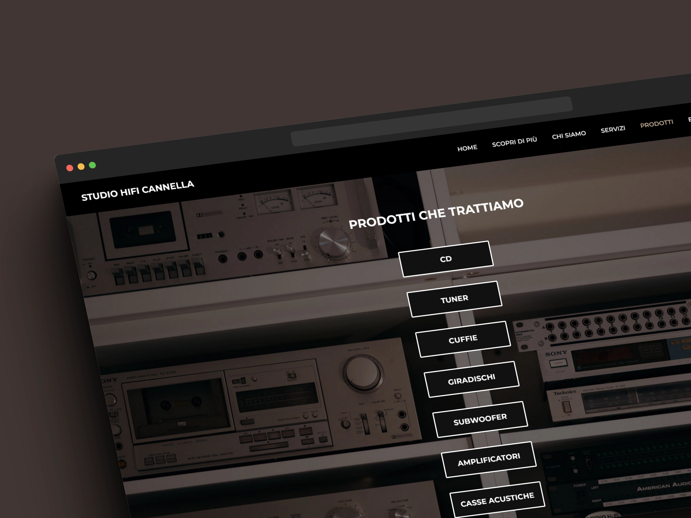
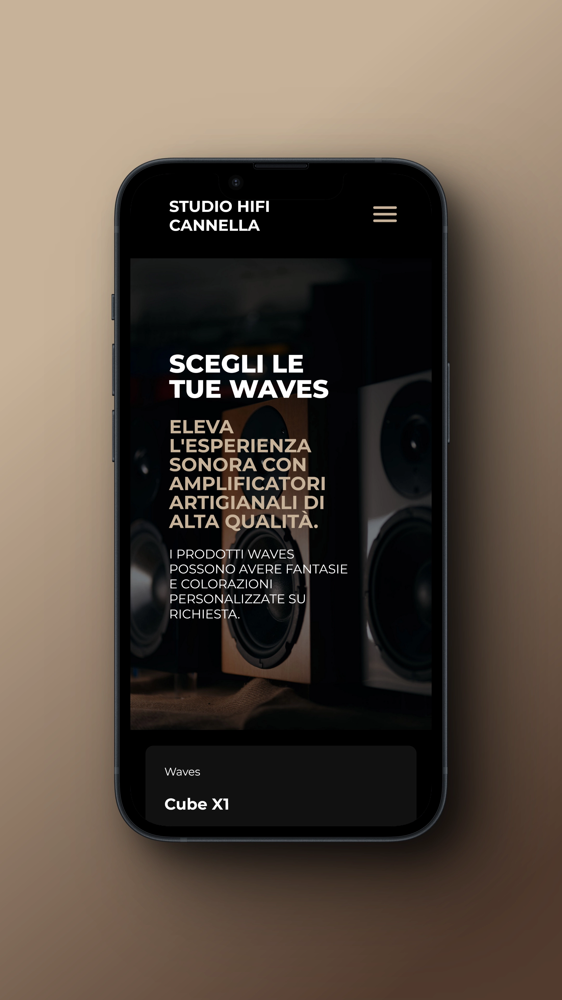
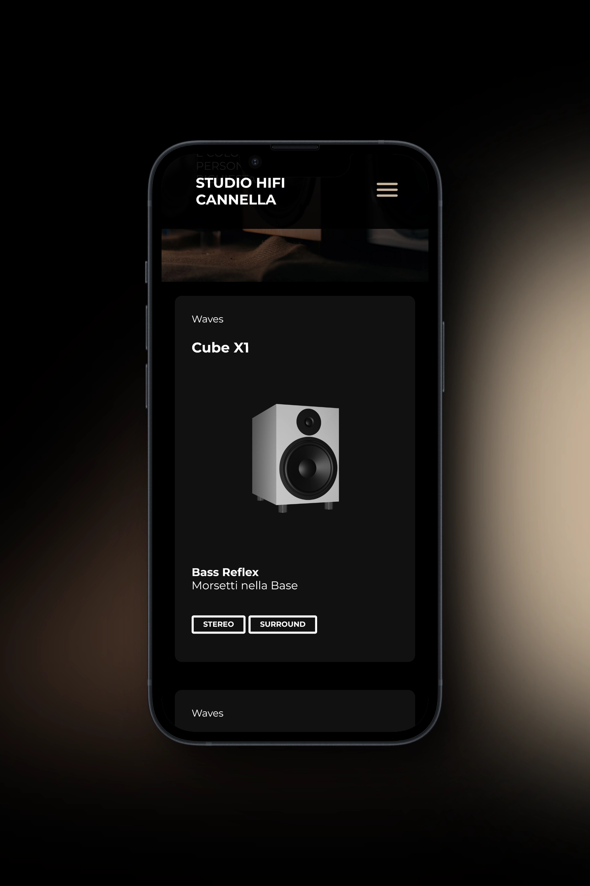
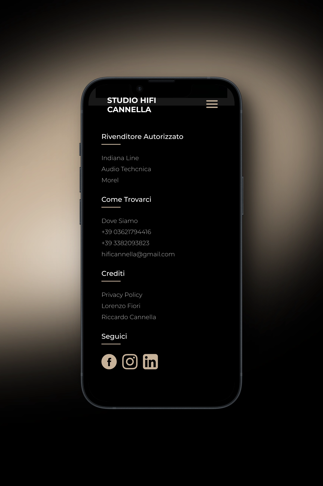
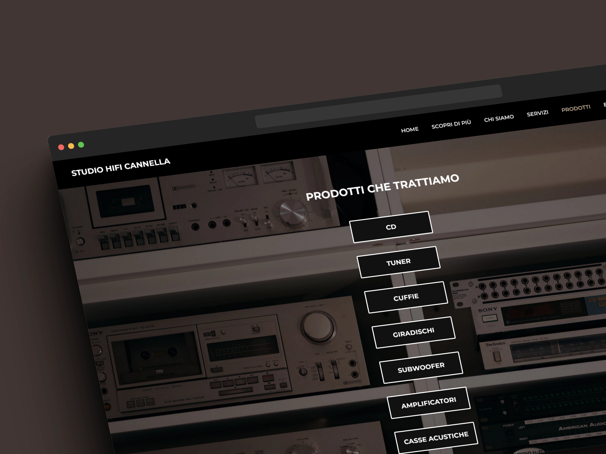
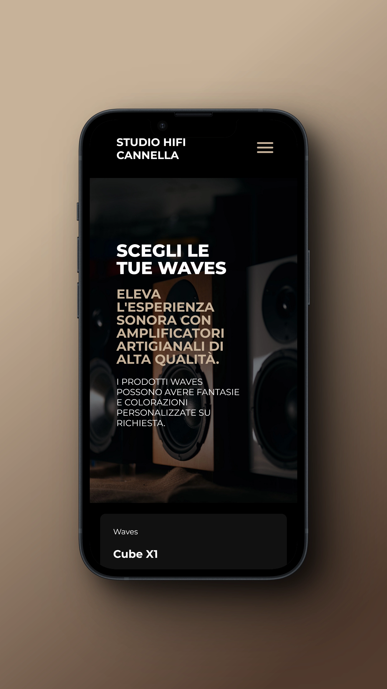
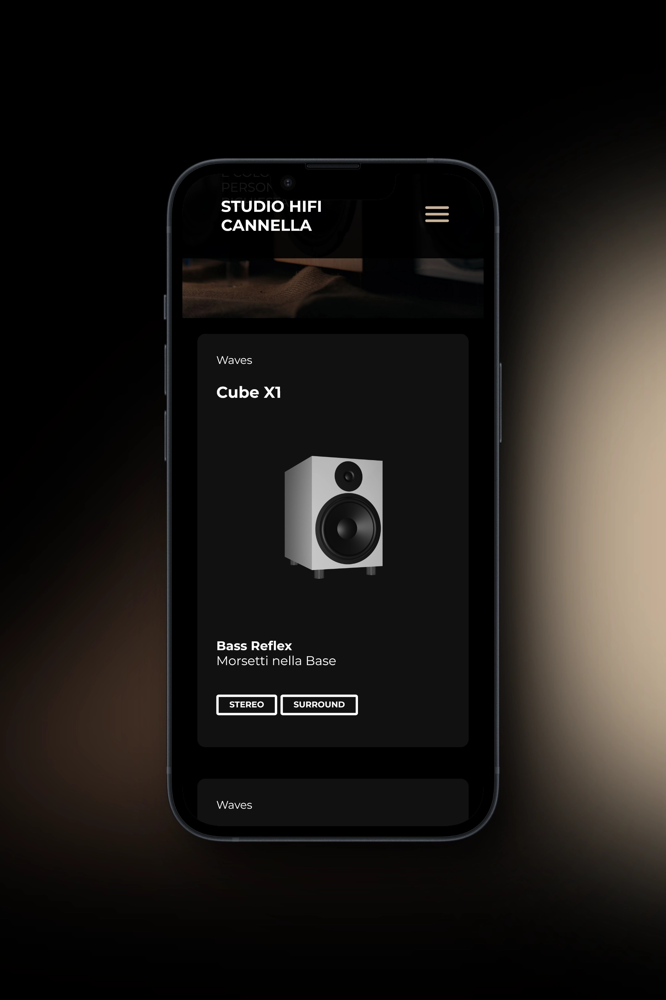
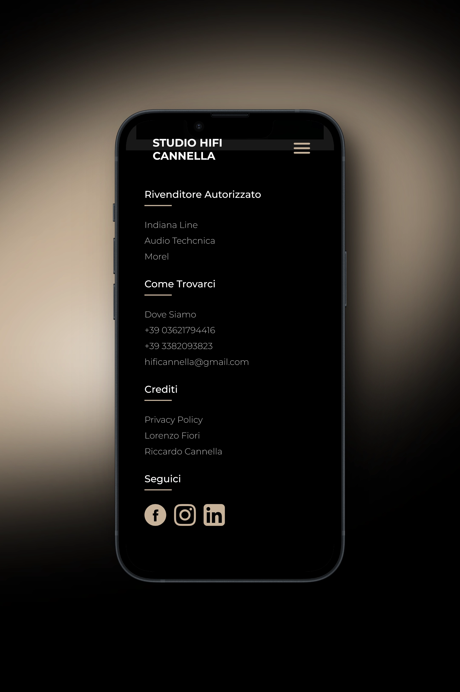

Lorenzo Fiori
HiFi Cannella
Full Website Redesign
The website of HiFi Cannella, one of the few remaining studios of its kind, was in need of a redesign.
The brief was to create a layout that is easily understandable for all users, modern, and geared towards the new generations.
Before proceeding with actual development, I designed wireframes with Affinity Designer, representing the web page structure and the placement of key elements. This allowed me to visualize the project early on and enabled the client to provide initial feedback.
I paid particular attention to designing the user interface, ensuring the design was visually appealing, intuitive, and consistent with the client's brand. I selected colors, typography, and visual elements in line with the desired style.


 






